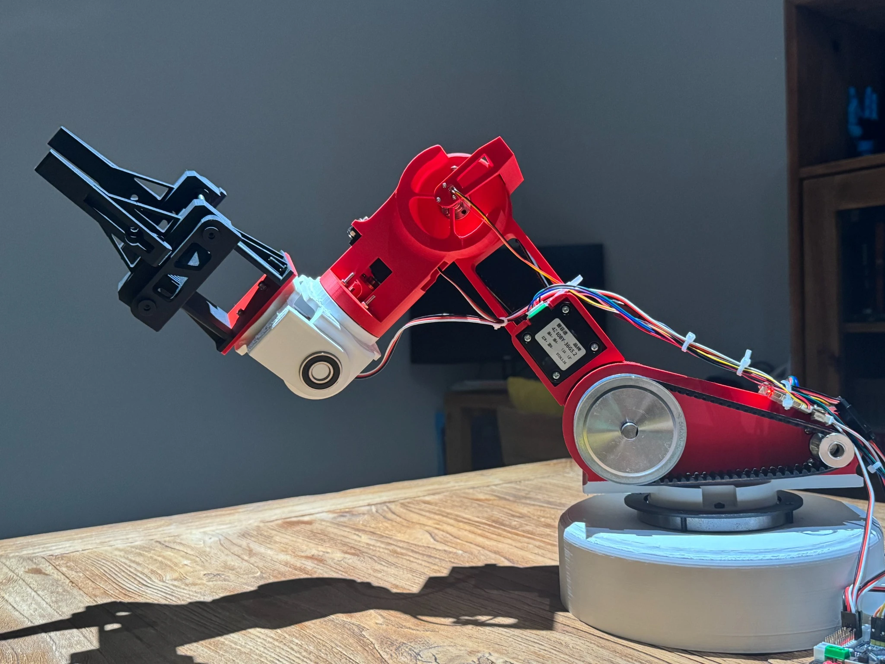

W-D1
Robotic Arm
A six-axis robot I designed from the mechanism outward — structure, transmission, embedded control, sensing, simulation, and the revisions in between.
Shanghai · 2026
One robot.
No handoffs.
I wanted a project where every layer had consequences for the next one. A wider bearing changed packaging. Packaging changed wiring. Wiring changed the printed parts. The encoder changed what the firmware had to understand.
W-D1 became a full-stack mechatronics exercise: not a finished product, but a machine I could keep asking harder questions.
The whole chain,
on one page.
Four layers, one machine. Click through each layer or open the CAD view to see how the architecture connects.
Mechanism
Links, bearings, belt reductions, shafts, housings, stiffness.
Explore ↘ 02Control
Stepper and servo actuation, STM32 commands, coordinated motion.
Explore ↘ 03Sensing
Absolute joint feedback, zeroing, angle mapping, wrap-around.
Explore ↘ 04Digital twin
Same joint structure in MuJoCo for kinematics and trajectory work.
Launch ↗
Designed for the table,
not the render.
The exposed transmission is the point. You can see where torque travels, where the structure is supported, and where later revisions had to make room for real hardware.



{kind=link}
The first sweep
changed the project.
Once multiple joints could move through a real workspace, the questions became less theoretical: balance, repeatability, cable routing, joint limits, encoder behavior, and what the simulation was missing.
Version history
you can hold.
The final assembly hides most of the project. The rejected parts show the decisions: clearances that were wrong, geometry that flexed, joints that needed support, and packaging that looked easier in CAD.

 First powered pose ＋
First powered pose ＋
Thirty seconds
from the middle.
Fitting printed parts, checking alignment, and turning a table of components into one mechanism. Short enough to stay useful; long enough to show that the robot did not arrive assembled.
Continue to integration →Every assumption
became a wire.
This is where CAD became robotics: packet formats, encoder zeros, belt tension, missed steps, servo power, cable paths, and host-side commands all sharing one physical system.

Make everything talk
Stepper control, servos, encoder packets, serial parsing, and host commands.
Understand the encoder
Raw angle, zero references, mapping, wrap-around, and behavior near the boundary.
Accept mechanical reality
Belt tension, shaft support, stiffness, packaging, and loads rewrote the brief.
Keep model and hardware aligned
One joint structure across the physical arm and MuJoCo twin.

Upright pose / earlier revision
Same joints.
Less gravity.
Open the browser model, move the joints, run showcase motions, and inspect the same structure without the bench wiring in the way.
Open CAD ＋